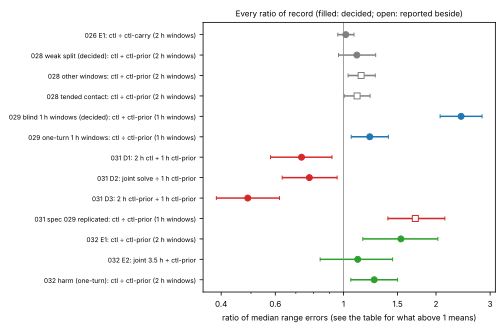
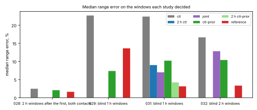

The long-engagement track as a whole
2026-11-21 · spec 034 · specs 023–032 · no new seed · gitma2
What stands
- ctl on 2-hour windows overlapping 30 min, stitched (spec 023)
- 2-hour ctl-prior for the tended contact, up to 12 h (owner, 2026-11-21)
- Its faults: carried covariance not calibrated; hand-over defect kept; windows placed past true manoeuvres
Every ratio of record

Above 1: the carried system (or the side named) better. Full conventions in experiments/20261121-long-synthesis/tables.md.
Errors on the windows each study decided

The reference sees only its own span: no ceiling for a system that carries information in.
Read together
- A carried start: accuracy not shown to improve; saves about 31% of the search where it runs
- A carried prior beats the same window alone where it is blind to range: 1.7–2.4 at 1 h; 1.37 pooled at 2 h, far range only
- It does not beat keeping the bearings: joint solve 0.77 (1 h), not separated (2 h)
- Longer windows beat a shorter window plus a prior
Never tested; reopen only with
- Never: real bearings, association, ownship steered by its own track, calibrated hand-over, beyond 12 h registered
- Reopen with: measured realism, association, or a case where only a hand-over can travel
Write-up: /blog/2026/11/21/long-synthesis · Figures: scripts/research/long_synthesis.py